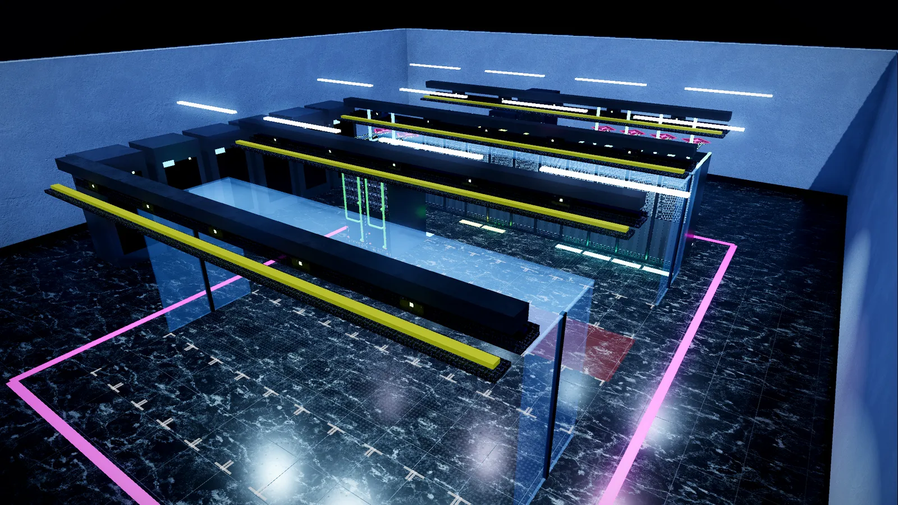
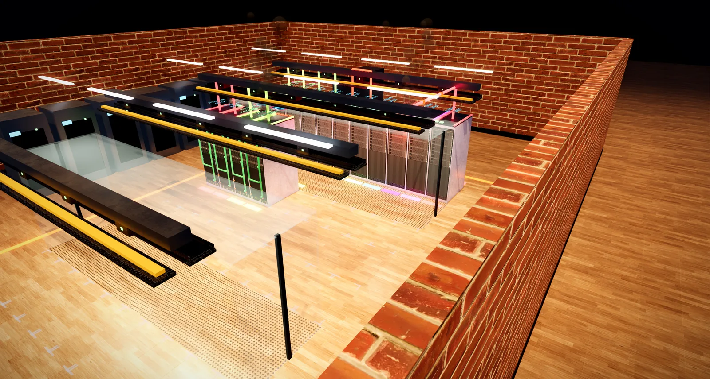
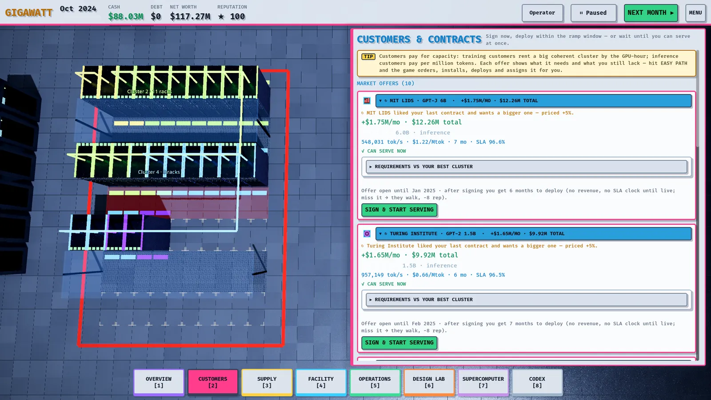
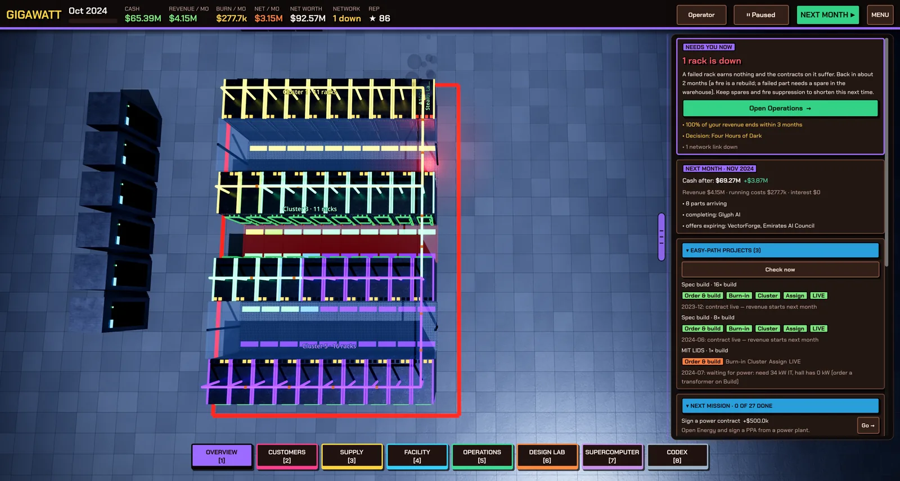

Make it yours
Choose the floor, rack finish, walls, lighting and accent colour of your hall, and a dark or light interface theme.
Everything on this page is cosmetic. It never changes prices, power, cooling or any other number in the game.
The Site screen
Pick a mode on the title screen and the Site screen opens before the game starts, with a live 3D preview you can drag to turn. Use defaults skips it. You can change the look of a running game later from Menu ▸ Change look.

- Floor: grey access tile, white tile, black marble, oak parquet, dark walnut, steel plate, polished concrete, dark terrazzo, a black-and-cream checker, or anti-static green. The perforated tiles in the cold aisles stay, whatever you pick.
- Rack finish: black powder-coat, white, brushed steel or graphite grey.
- Walls: painted block, red brick, rough stone, painted steel, a glass curtain, or open plan with no walls.
- Lighting: neutral white, cool blue, warm amber or night shift.
- Accent colour: the colour of the painted boundary line on the floor.



Interface themes
Open Menu ▸ Settings ▸ Display and pick a theme. The change applies immediately.
- Dark: Midnight (the default), Graphite, Ember and High contrast.
- Light: Paper, Sand and Mist.


High contrast uses pure black, white text and strong outlines, and is a good choice for bright rooms and for anyone who wants the clearest possible text. Pair it with Accessibility ▸ Text size boost if you need larger text.
Found a mistake or something missing? Edit this page on GitHub or ask in Discussions.